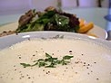

Суп (от фр. soupe) — блюдо, в составе которого содержится не менее 50 % жидкости. Суп — важная составная часть пищи человека, служащая источником энергии и материалом для построения органов и тканей тела. Супы содержат много растворённых белков, жиров, углеводов и экстрактивных веществ, которые легко перевариваются и хорошо усваиваются организмом.(больше инфы по ссылке ниже)
| Название | Картинка | Происхождение | Тип | Заметки |
| Авголемоно |  | Греция | потаж | Куриный бульон, рис, ризони и лимон, сгущённые осторожно введёнными яйцами (чтобы не свернулись). |
| Аквакотта | Италия (Тоскана) | густой | Изначально крестьянская пища, исторически основные ингредиенты: вода, чёрствый хлеб, лук, томаты, оливковое масло и любые сподручные овощи и обрезки мяса. Блюдо считается одним из древних. | |
| Арахисовый суп | Африка | густой | Готовится из арахиса, популярен в африканской кухне. |